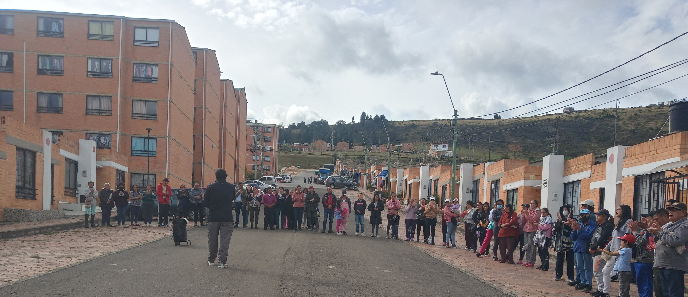

¡Llegando a más personas!

¡Salvando almas!

¡Inspirando un cambio impactante!


Es una fundación que nació en el ministerio  Evangelistico Mariachi Celestial con sede en la ciudad de Tunja Boyacá, Colombia, con el objetivo de  ayudar  a direccionar las vidas de niños y jóvenes, maltratados y abusados, en el manejo del tiempo fomentando habilidades para el futuro. Además de  exaltar el nombre de Dios mediante la promoción de todas las expresiones culturales entre la comunidad en general dentro de los lineamientos cristianos. “FuCriNG” que significa: Fundación Cristiana por una Nueva Generación.
Compromiso con la Transformación Personal
Inclusión y Diversidad Cultural
Formación en Valores Cristianos
Transformamos donaciones de corazones generosos en alimentos repartidos con amor, alimentando esperanzas y construyendo puentes de solidaridad en cada rincón necesitado
Más informaciónCon cada donación, celebramos días especiales para aquellos que más lo necesitan, llevando alegría y esperanza a través de gestos que marcan la diferencia.
Más informaciónCompartimos más que comida, construimos comunidad, ofreciendo platos llenos de esperanza y calidez para todos los que lo necesitan.
Más información
Tu apoyo es esencial para dar vida a todos nuestros proyectos. √önete y s√© parte del cambio que queremos lograr juntos. ¡Tu contribuci√≥n hace la diferencia! ü홂ú®
Quiero ayudar